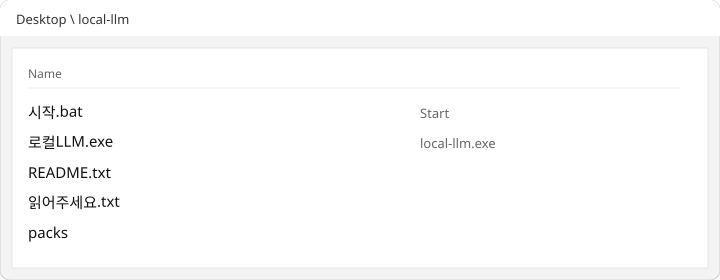
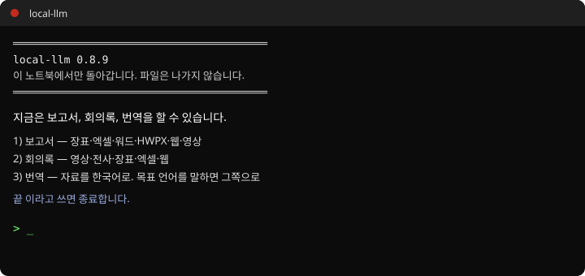
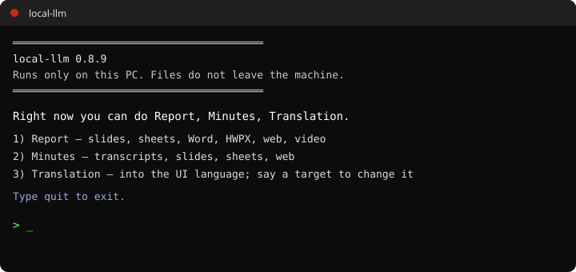
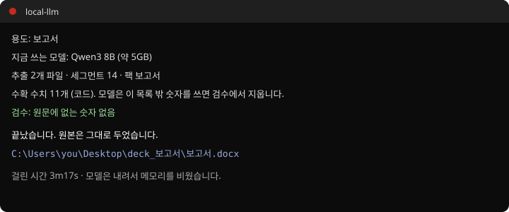
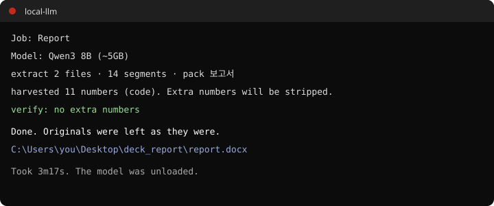
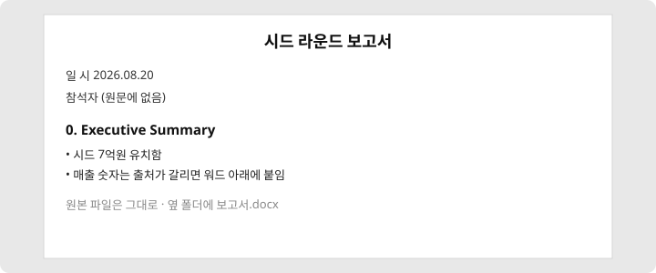
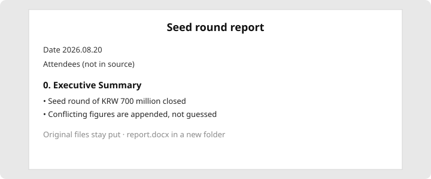

local-llm
장표·엑셀·한글·영상에서 워드를 만듭니다. 이 노트북에서만 돌아갑니다. 클라우드 API 없음.
Turns slides, sheets, Hangul files, and video into Word. Runs only on this PC. No cloud API.
1 보고서2 회의록3 번역원본은 그대로
1 Report2 Minutes3 TranslationOriginals untouched
이렇게 돌아갑니다
What you see







받는 법
Get it
- 아래 복사를 누릅니다.
- 시작 메뉴에서 PowerShell을 열어 붙입니다. 관리자일 필요 없습니다.
- 바탕화면 local-llm 폴더가 열리면 시작.bat을 더블클릭합니다.
- Click Copy.
- Open PowerShell from Start and paste. Admin is not required.
- When the Desktop folder opens, double-click 시작.bat.
복사됨Copied
Windows가 막으면 추가 정보 → 실행.
검은 창을 닫지 마세요. 첫 실행은 모델을 받습니다 (16GB는 약 5GB).
파워셸이 막히면 zip을 바탕화면에 푸세요. Source code가 아닙니다.
PPT·XLS·HWP 구형은 PPTX·XLSX·HWPX로 저장한 뒤 넣습니다.
If Windows blocks it: More info → Run anyway.
Do not close the black window. First run downloads the model (~5GB on 16GB PCs).
If PowerShell is blocked, extract the zip on the Desktop. Not Source code.
Old PPT / XLS / HWP: save as PPTX / XLSX / HWPX first.
오류 신고는 GitHub Issues. 원문은 보내지 말고 오류.txt만.
Errors: GitHub Issues. Attach error.txt only, never source files.